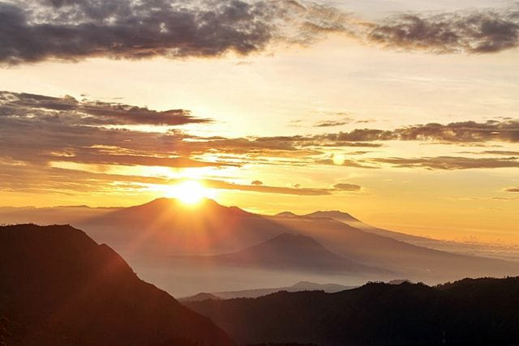
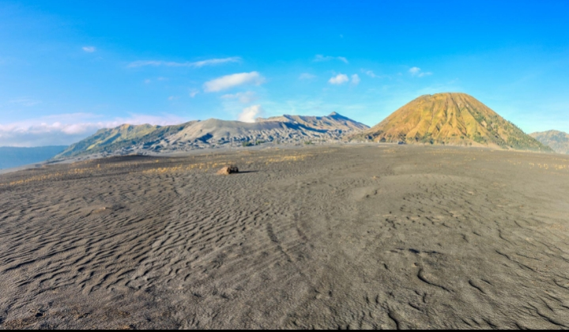
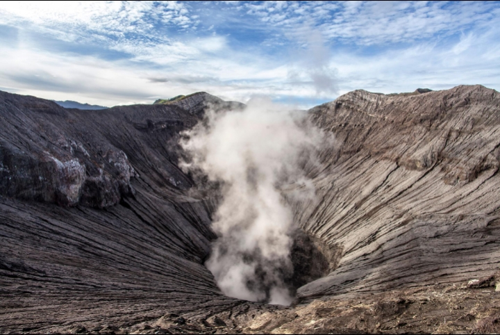

🌄 Sunrise Bromo

Menikmati matahari terbit dengan pemandangan pegunungan yang indah dan suasana pagi yang menenangkan.
✨ Destinasi Wisata Pilihan ✨
Menikmati keindahan alam, lautan pasir, dan matahari terbit yang memukau.
Jelajahi Sekarang ♡Gunung Bromo merupakan salah satu destinasi wisata alam terkenal di Jawa Timur, Indonesia. Gunung ini berada di kawasan Taman Nasional Bromo Tengger Semeru dan memiliki pemandangan alam yang sangat indah.
Gunung Bromo terkenal dengan kawahnya, lautan pasir yang luas, serta pemandangan matahari terbit yang menakjubkan. Udara yang sejuk dan suasana pegunungan menjadikan Bromo tempat yang menarik untuk dikunjungi.

Sumber gambar: Unsplash

Menikmati matahari terbit dengan pemandangan pegunungan yang indah dan suasana pagi yang menenangkan.

Hamparan pasir luas yang menjadi salah satu ciri khas Gunung Bromo dan menawarkan pemandangan unik.

Kawah Gunung Bromo menjadi daya tarik wisata yang terkenal. Pengunjung harus mengikuti aturan keselamatan saat berada di kawasan kawah.